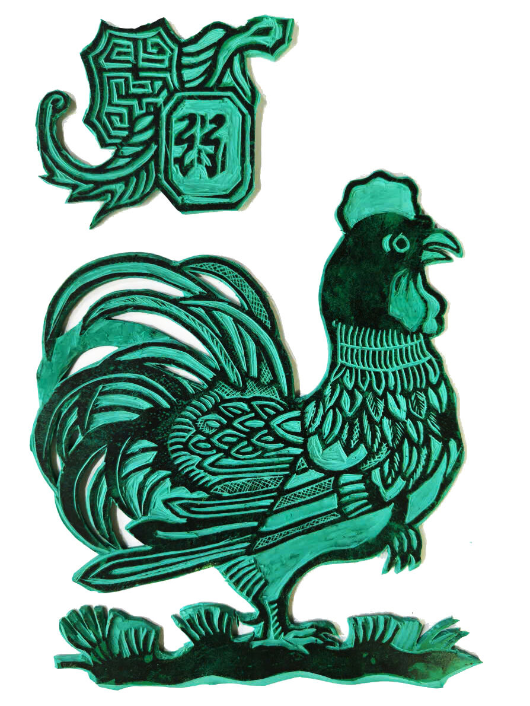
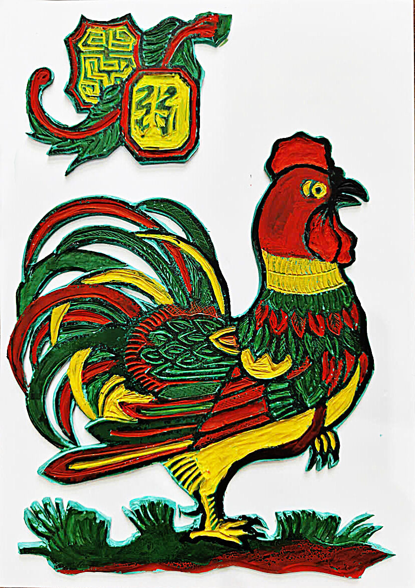
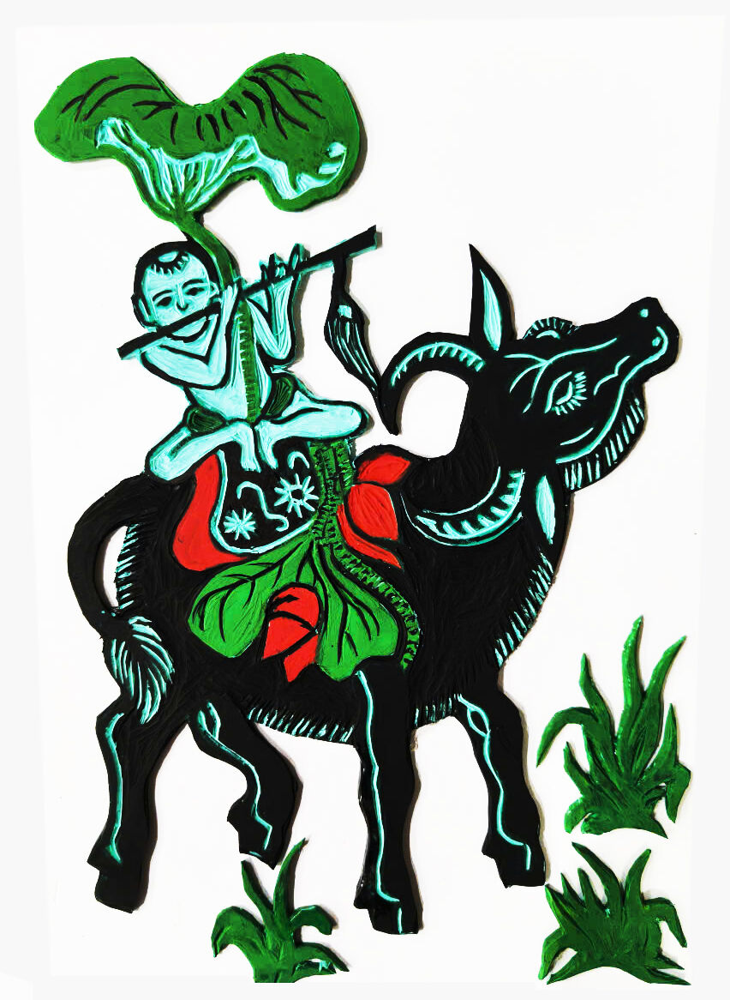
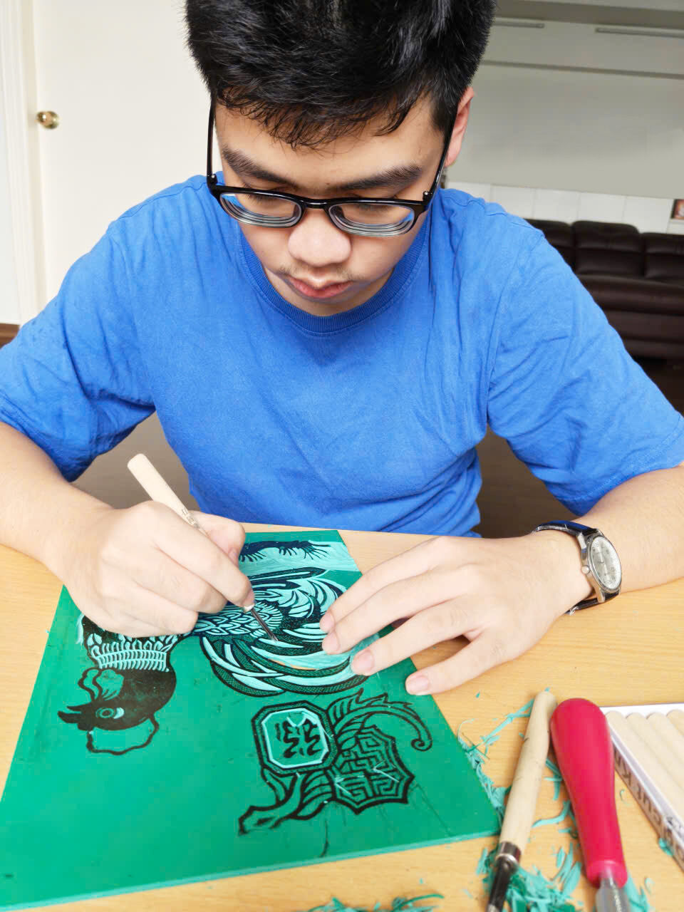
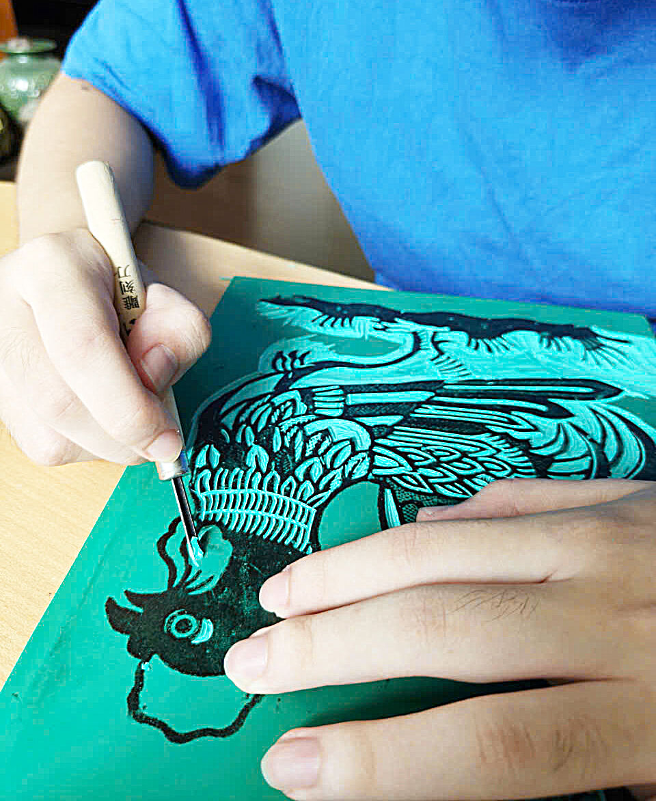
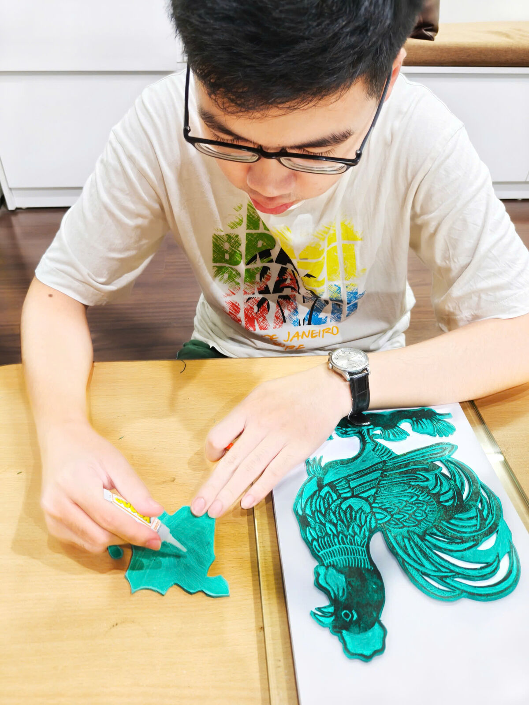
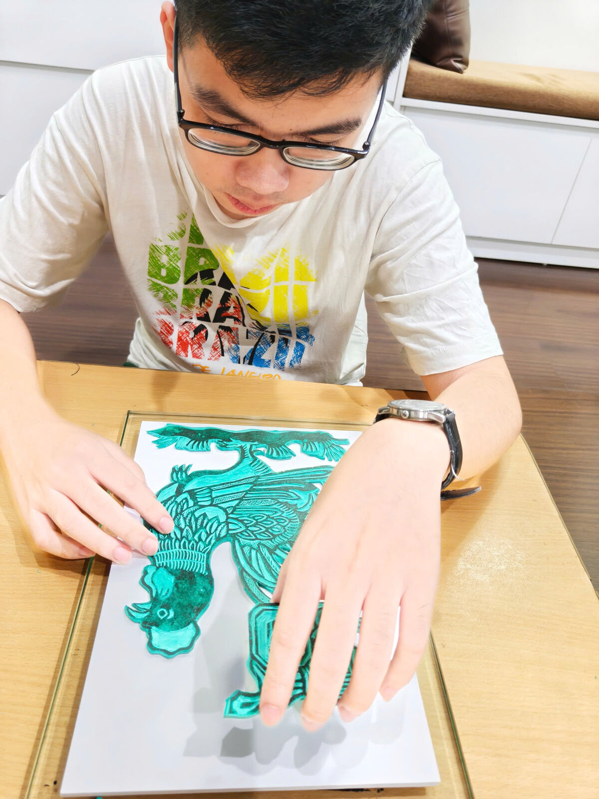
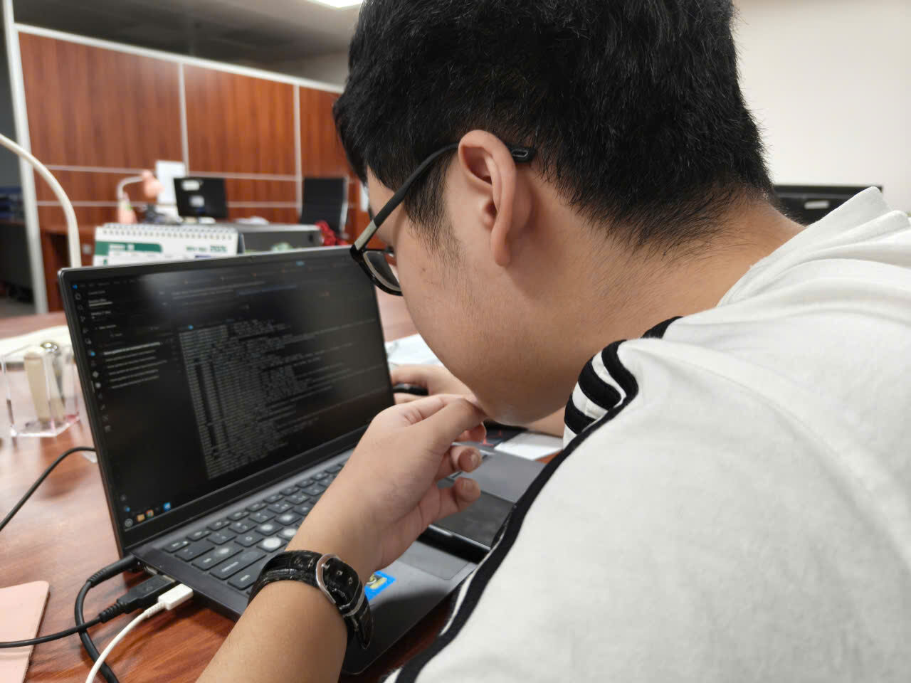
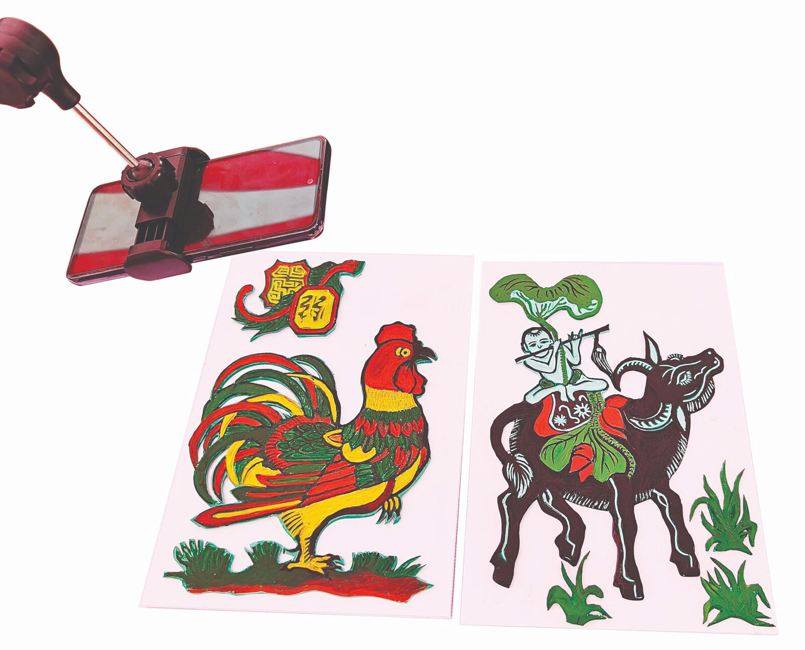

Truyền thống được mở ra qua những đôi tay sáng tạo
Chạm âm
Đông Hồ
Phù điêu chạm khắc · Điện thoại trên giá đỡ · Một giọng nói
Ba bức tranh dân gian Đông Hồ được khắc lại thành thứ có thể cảm nhận bằng đôi tay — cùng một ứng dụng dõi theo đầu ngón tay bạn và đọc to điều bạn đang chạm vào.

Gà dạ xướng · bản khắc gà
Di ngón tay trên bản khắc để nghe từng chi tiết.
Vì sao chúng tôi bắt đầu
“Xin đừng chạm vào”
Tranh Đông Hồ ra đời từ một làng nhỏ ở Bắc Ninh. Nét vẽ được in từ những bản khắc gỗ lên giấy điệp — loại giấy quét vỏ điệp giã mịn nên óng ánh — còn màu sắc đều được nghiền ra từ những thứ nhặt được ngay trong tự nhiên: đỏ từ sỏi son, vàng từ hoa hòe, xanh từ lá chàm, đen từ than lá tre. Ngày trước, người ta mua tranh về dịp Tết, dán lên tường, và sống cùng bức tranh ấy suốt một năm.
Nhưng với một người khiếm thị, cả căn phòng treo đầy tranh ấy lại là một căn phòng đầy những cánh cửa đóng kín. Tấm biển trên tường ghi “không chạm vào hiện vật”, và đứng trước một bức tranh, câu nói ấy lặng lẽ mang một nghĩa khác: thứ này không được làm ra cho bạn.
Lời mô tả cũng không lấp được khoảng trống đó. Nghe ai đó nói “đây là một con gà, màu đỏ và xanh, đứng trên cỏ” chỉ là một bản tóm tắt bức tranh, chứ không phải một lần được gặp gỡ nó. Bạn sẽ không biết rằng cái đuôi được xếp từ nhiều lớp lông dài chồng lên nhau, hay vòng lông quanh cổ được khắc thành những đường song song mảnh, cho đến khi chính ngón tay mình lướt qua chúng.
Đó là một sự thiệt thòi đáng để làm điều gì đó. Không phải là chuyển bức tranh thành lời, mà là cách đặt chính bức tranh ấy vào đôi tay một ai đó — rồi để nó lên tiếng trả lời khi họ hỏi mình vừa chạm vào điều gì.


Quá trình thực hiện
Khắc nó, nâng nó lên, rồi dạy nó lên tiếng
Không có đường tắt nào cho việc này. Một tấm phù điêu để đôi tay có thể “đọc” được phải được khắc thủ công, từng nét một, và chiếc ứng dụng chỉ thực sự đáng để xây dựng khi đã có một thứ thật sự nằm trên bàn để nó nhìn vào.
Khắc bản
Hình mẫu Đông Hồ được đồ lên một tấm lino rồi khắc bằng dao khắc, giống hệt cách làng khắc bản gỗ in tranh xưa nay — chỉ khác là ở đây, bản khắc không phải là công cụ để in. Bản khắc chính là tác phẩm. Mọi thứ mà sau này một đầu ngón tay sẽ “đọc” được đều phải được quyết định ngay từ bước này: rãnh khắc sâu bao nhiêu, gờ nổi rộng bao nhiêu, khoảng cách giữa hai chiếc lông phải chừa bao nhiêu để chúng vẫn là hai chiếc lông riêng biệt chứ không dính thành một khối.


Nâng hình khỏi mặt phẳng
Những hình đã khắc được cắt rời rồi dán lên tấm bìa nền theo từng lớp, để bức tranh nổi hẳn lên khỏi bề mặt thay vì nằm phẳng trên đó. Chính việc xếp lớp cho bàn tay một nơi để “đi”: cái đuôi nằm cao hơn thân, đầu con trâu nằm cao hơn vai nó, và đường ranh giới giữa hai lớp ấy là một bậc thềm nhỏ mà ngón tay có thể tự tìm ra, không cần ai chỉ dẫn.
Sau đó tranh được tô màu — đỏ, xanh, vàng, đen — để tác phẩm vẫn là một bức tranh Đông Hồ đúng nghĩa với bất kỳ ai nhìn vào nó. Một đứa trẻ sáng mắt và một đứa trẻ khiếm thị có thể cùng đứng trước một chiếc bàn và cùng “nhìn” vào một thứ.


Viết ứng dụng
Tấm phù điêu cho bạn biết ở đó có một hình khối. Nhưng nó không thể cho bạn biết con gà đang gáy, hay con cá chép đang ngước nhìn bóng trăng. Đó là phần việc của chiếc điện thoại: nó đứng trên một giá đỡ nhỏ phía trên bức tranh, dõi theo bàn tay bên dưới, và cất tiếng.
Phần lớn công sức lại nằm ở nửa việc không mấy hào nhoáng — tìm ra bàn tay qua camera mà không mặc định một tông màu da nào, phân biệt được lúc nào ngón tay chỉ lướt qua một chi tiết và lúc nào nó thật sự dừng lại ở đó, rồi trả lời đủ nhanh để không ai đứng trước bàn phải tự hỏi liệu máy có đang bị treo hay không.


Ứng dụng làm gì
Bạn đặt một bức tranh dưới giá đỡ rồi mở ứng dụng lên. Nó nhìn một lần vào thứ đang có trên bàn, nhận ra đây là bức nào trong ba bức Đông Hồ, rồi đọc to câu chuyện của bức tranh đó — sự tích đằng sau nó, những con vật tượng trưng cho điều gì, vì sao người ta treo nó vào dịp Tết.
Sau đó nó im lặng và dõi theo bàn tay bạn. Đặt đầu ngón tay lên bất kỳ chi tiết nào trên bản phù điêu và giữ yên khoảng một giây; ứng dụng coi khoảnh khắc đó là một câu hỏi, nhìn vào vị trí dưới ngón tay bạn, rồi trả lời bằng tiếng Việt. Nhấc tay lên, di chuyển sang chỗ khác, và nó lại sẵn sàng cho câu hỏi tiếp theo. Không cần chạm vào nút nào, cũng không cần giữ bất cứ thứ gì.
Ra khỏi xưởng
Đặt nó lên bàn trước những người xa lạ
Một dự án như thế này có thể trông đã hoàn thiện khi còn ở trên bàn làm việc, rồi vỡ vụn ngay khoảnh khắc một người khác chạm vào nó. Vì vậy, các bản phù điêu và chiếc điện thoại đã được mang ra các sự kiện công cộng, bày biện theo cách để bất kỳ ai cũng có thể bước tới: hai bức tranh, một giá đỡ, và không một lời giải thích nào cho đến khi có người hỏi.
Điều mà một chiếc bàn thật sự dạy cho bạn phần lớn là về đôi bàn tay. Người ta thường đưa cả lòng bàn tay ra trước khi chỉ bằng một ngón. Họ lướt qua một chi tiết đến ba lần trước khi dừng lại ở đó. Họ hỏi về thứ ở góc tranh, chứ không phải thứ ở giữa. Mỗi thói quen như vậy đều trở thành một thay đổi trong ứng dụng — khoảng dừng bao lâu thì được tính là một câu hỏi, bàn tay phải di chuyển bao xa thì mới được hỏi câu tiếp theo, ứng dụng nên nói bao nhiêu trước khi im lặng và lắng nghe trở lại.
“Chỗ này để trống cho một câu nói thật của khách tham quan tại bàn trưng bày.” Ai đã nói · sự kiện nào
“Và một câu nữa ở đây.” Ai đã nói · sự kiện nào
Điều sắp tới
Những người mà nó thật sự được làm ra cho
Tất cả những người đã dùng thử cho đến nay đều là người sáng mắt. Họ chỉ nhắm mắt lại — một phép thử hữu ích, nhưng không phải là phép thử thật sự. Bước tiếp theo là mang những bức tranh và chiếc điện thoại đến với các em nhỏ khiếm thị, và để chính các em quyết định xem điều này có thực sự hiệu quả hay không.
Chúng tôi dự đoán sẽ có rất nhiều điều mình đã làm sai. Những lời mô tả được viết bởi những người học về các bức tranh này bằng cách nhìn vào chúng, nên có lẽ chúng đầy những từ ngữ chỉ có ý nghĩa khi bạn đã từng nhìn thấy thứ đó rồi. Những phần trên bản phù điêu mà chúng tôi thấy hiển nhiên, có thể lại là những phần chẳng ai tìm ra. Dự định là ngồi xuống, không nói gì, quan sát xem các em chạm vào đâu trước tiên, rồi viết lại ứng dụng theo đúng những câu hỏi của các em, chứ không phải của chúng tôi.